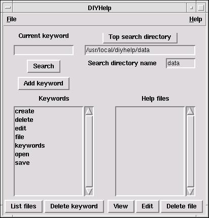

What you need here is the ability to search the descriptions of the functions
for the words you know. Programs like
htdig
allow you to perform a full-text search of the
R documentation and find out which function
descriptions match your keywords. If you're not that lucky, but do have
Tcl/Tk installed on your PC, there is still hope.

Part of the Kickstarting R package is
a little text searching facility called DIYHelp. The program is
based upon a simple, brute-force search of the directory tree from the point
that you specify. The concept is that you often know approximately where the
information you want to know is, but not exactly which file.
By unpacking the diyhelp.tar.gz file in a suitable place (often
/usr/local) and following the instructions in the
INSTALL file, you can see if the program helps you to find
functions in R.
DIYHelp allows you to enter a keyword and a directory in which to
begin the search. It will then build a list of all the files under that
directory that it can display that contain the keyword. When you select one of
these files, it will start up a program appropriate to display the file. It can
also pare down the list to just the files you find helpful, and save the list
for future reference. As an example, using R-1.6.2, the function
help.search() returns 28 help documents with the keyword
"correlation", while DIYHelp returns a list of 139. Obviously, most of these
won't be of use, but the list is exhaustive. I would particularly like
feedback on this little program, as I have found it quite helpful in locating
the function I need, but am ignorant of the name.